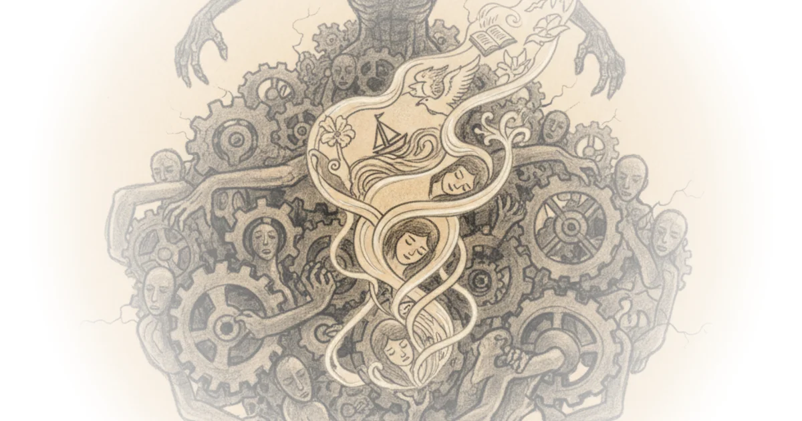
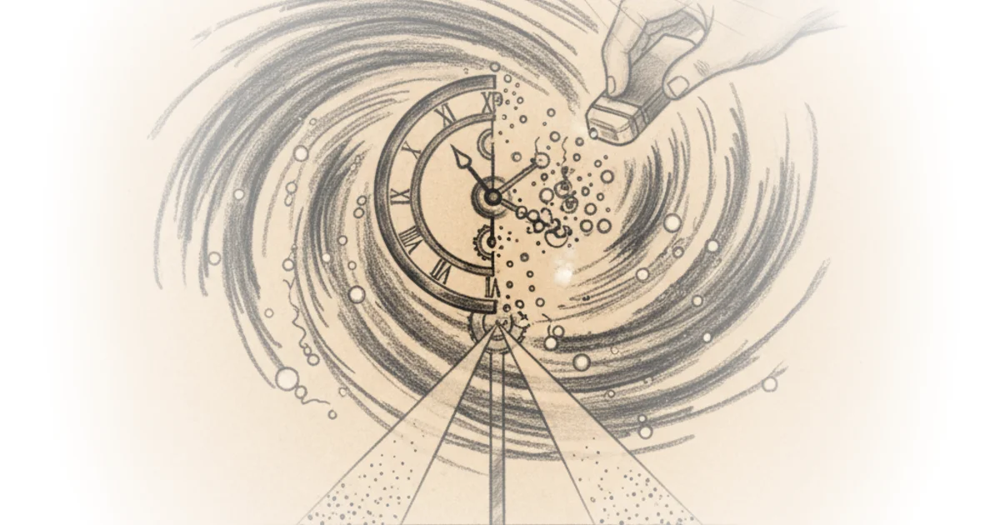
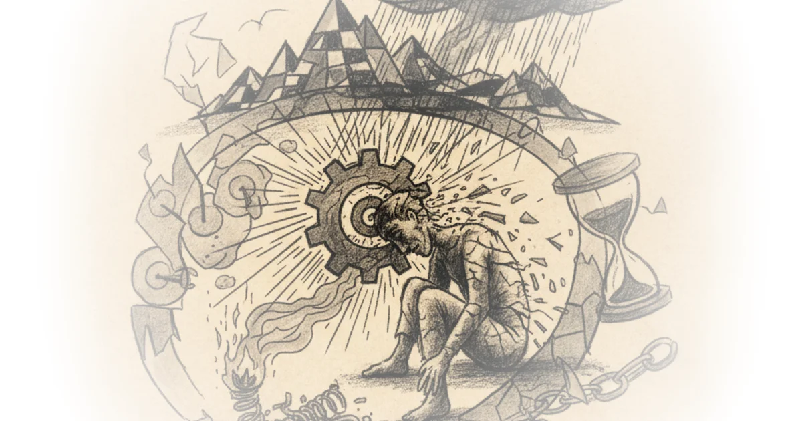
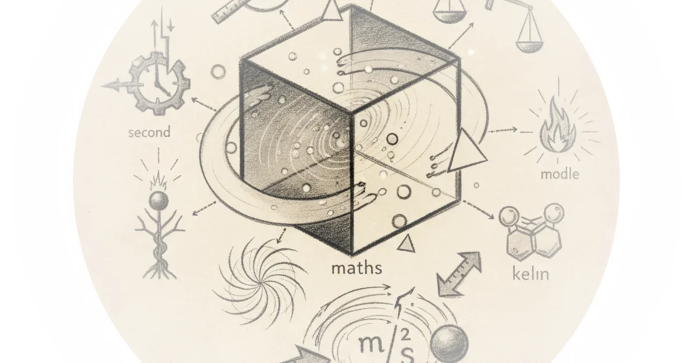
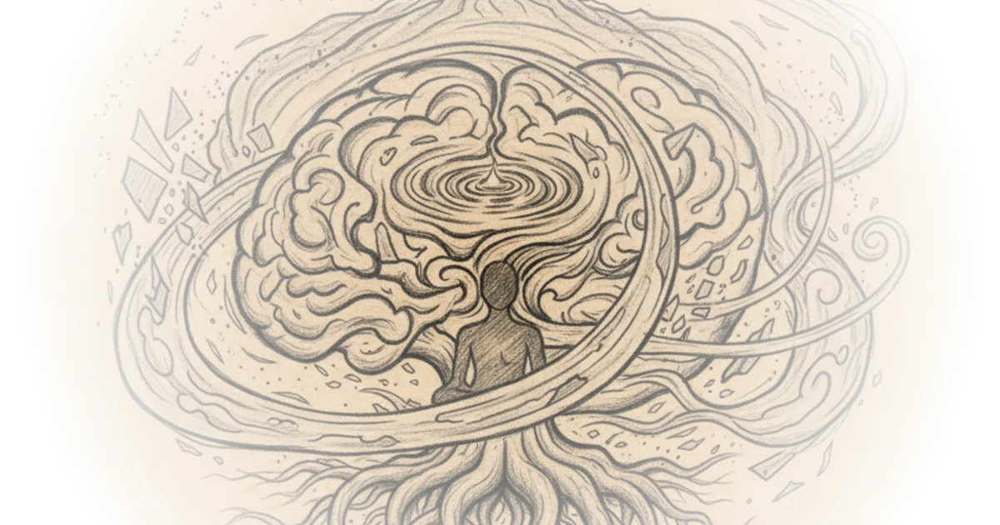

Philosophy & theory roundup - November 21, 2025 Mona Mona · Philosophy Publics ·Nov 21, 2025 · 4 min read · Philosophy
108: We need to talk about the baby sheet mask controversy Various · Two Truths ·Nov 21, 2025 · 10 min read · Philosophy
Economic sovereignty in the age of new political capitalism Cyril Hédoin · ·Nov 20, 2025 · 10 min read · Philosophy
The new AI consciousness paper Scott Alexander · Astral Codex Ten ·Nov 19, 2025 · 19 min read · Philosophy
The philosopher's guide to watching everything fall apart (and what to do about it) | part one: Walter benjamin's angel of history Mona Mona · Philosophy Publics ·Nov 19, 2025 · 1 min read · Philosophy
The method in hegel’s self-censorship Daniel Tutt · Daniel Tutt ·Nov 19, 2025 · 11 min read · Philosophy
Why we remain alive also in a dead internet Slavoj Žižek · ŽIŽEK GOADS AND PRODS ·Nov 19, 2025 · 16 min read · Philosophy
The rise of "mindless" tv: Quantifying a new way of (kinda) watching television Daniel Parris · ·Nov 19, 2025 · 12 min read · Philosophy
The paradox is that when i accept myself just as i am, i change Henrik Karlsson · ·Nov 19, 2025 · 12 min read · Philosophy
Why i am a heretical Christian - philip goff Alex O'Connor · Cosmic Skeptic ·Nov 16, 2025 · 73 min read · Philosophy
Dreams beyond the algorithm Then & Now · Then & Now ·Nov 10, 2025 · 59 min read · Philosophy 
We're not ready for artificial general intelligence - will MacAskill Alex O'Connor · Cosmic Skeptic ·Nov 9, 2025 · 68 min read · Philosophy
Why materialism is complete nonsense - bernardo kastrup Alex O'Connor · Cosmic Skeptic ·Nov 2, 2025 · 98 min read · Philosophy
We were wrong about the quantum eraser! Ft. @LookingGlassUniverse Matt O'Dowd · PBS Space Time ·Oct 16, 2025 · 20 min read · Philosophy 
Why religions survive when prophecies fail Andrew Henry · Religion For Breakfast ·Oct 16, 2025 · 21 min read · Philosophy
Hustle culture, grindset, burnout Then & Now · Then & Now ·Oct 14, 2025 · 65 min read · Philosophy 
Does God know what time it is? - Emily qureshi-hurst Alex O'Connor · Cosmic Skeptic ·Oct 12, 2025 · 61 min read · Philosophy
The movement that could end capitalism Sabine Hossenfelder · Sabine Hossenfelder ·Oct 4, 2025 · 13 min read · Philosophy
How long will it take to solve the 5 big physics problems? Sabine Hossenfelder · Sabine Hossenfelder ·Oct 3, 2025 · 10 min read · Philosophy
Episode #237 ... the stoics are wrong - nietzsche, schopenhauer Stephen West · ·Oct 3, 2025 · 31 min read · Philosophy
At what point does spacetime become quantum? Matt O'Dowd · PBS Space Time ·Sep 18, 2025 · 16 min read · Philosophy
Movie monologues that radicalized my moral philosophy Tom van der Linden · Like Stories of Old ·Sep 16, 2025 · 19 min read · Philosophy
The most important skill college students should learn Jeffrey Kaplan · Jeffrey Kaplan ·Sep 16, 2025 · 14 min read · Philosophy
The universe’s secret way of measuring reality Sabine Hossenfelder · Sabine Hossenfelder ·Sep 5, 2025 · 10 min read · Philosophy 
Episode #235 ... the philosophy of zen Buddhism - byung chul han Stephen West · ·Sep 5, 2025 · 39 min read · Philosophy 